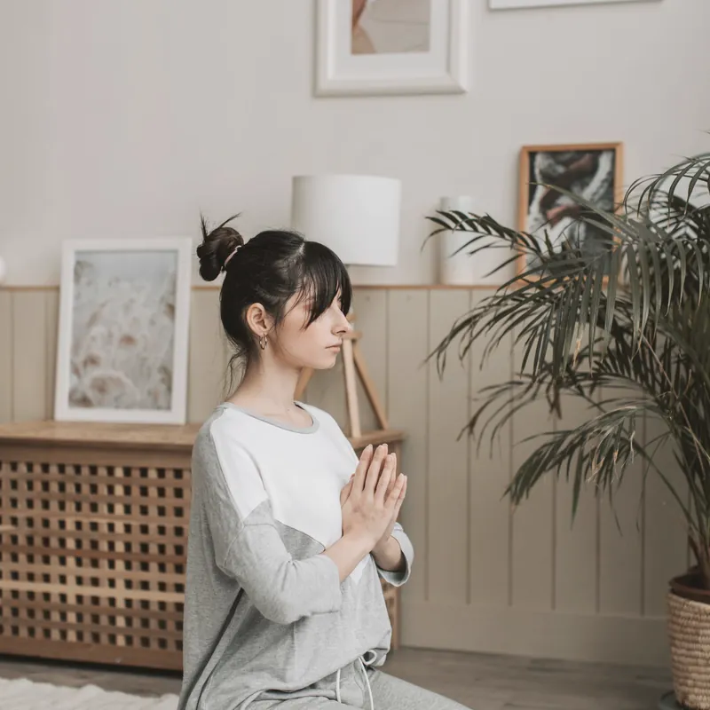
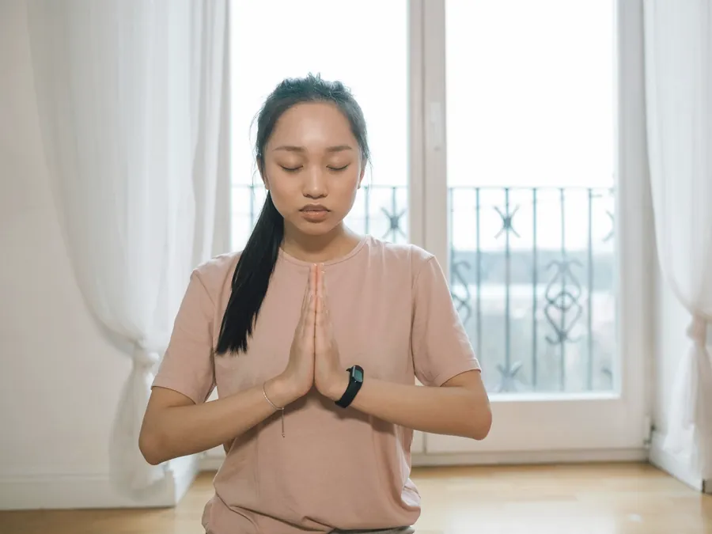
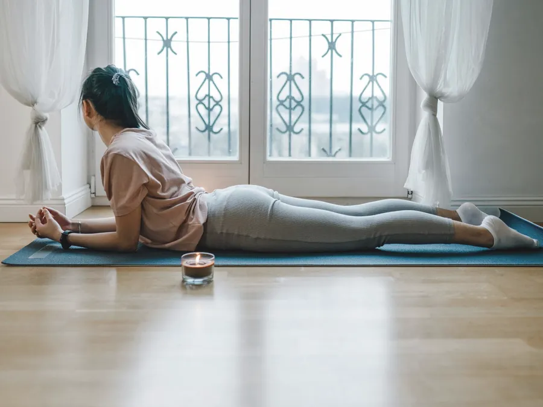
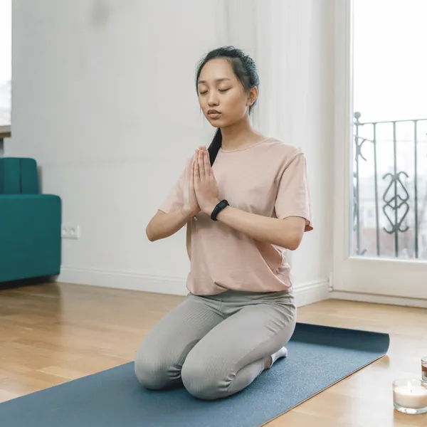
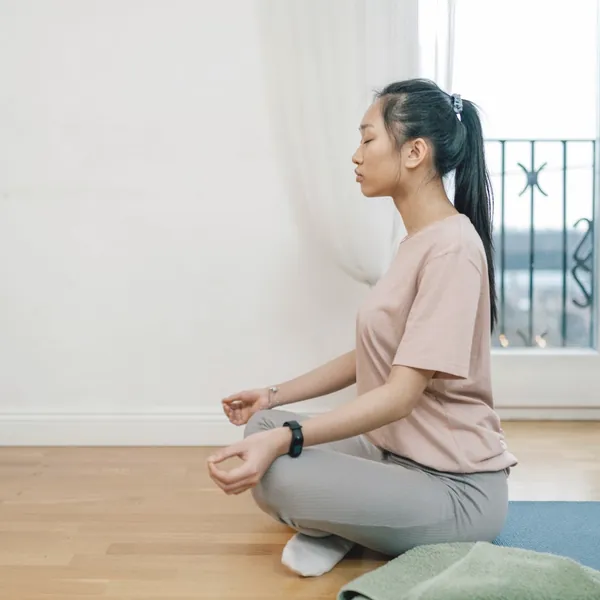
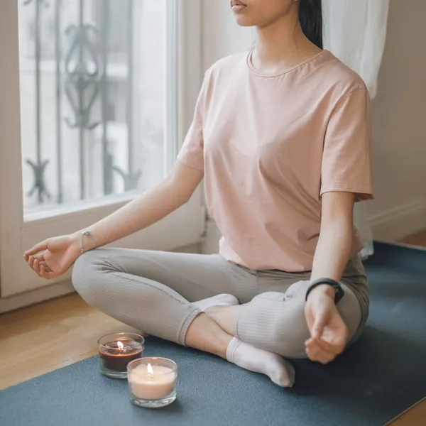
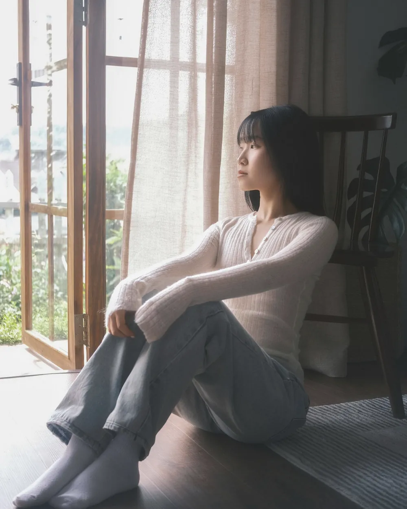
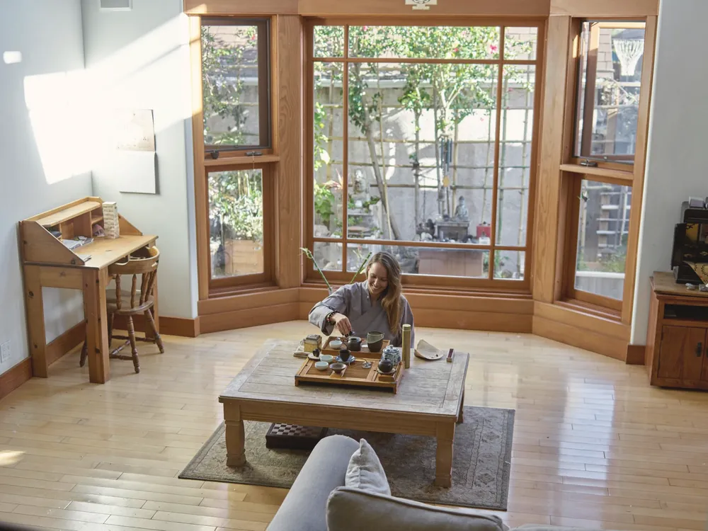

前と同じ毎日なのに
からだが違う
40歳前後、こんな変化はありませんか。
ささいなことで
イライラ明け方に
目が覚める寝ても疲れが
抜けない
気になるものにチェック
実は…
その不調には
ちゃんと理由があります
- ホルモン40代から、波を打ちながら減っていく
- 自律神経その波が、体温や眠りにも響く
- 重なる時期仕事・子ども・親のことが重なる
気の持ちようや
がんばりの問題では
ありません
波をなくそうとせず、その日の体に合わせます。
ひとりで
抱えなくていい
53.5%
更年期に関わる症状がある40代女性（30代は29.7%）
81.7%
症状があっても受診していない40代女性
65.5%
誰にも相談していない45〜65歳の女性（中等度以上の症状）
出典：内閣府「令和5年度 男女の健康意識に関する調査」（2023年、20〜69歳 2万人）／厚生労働省「更年期症状・障害に関する意識調査」（2022年）／スマート・ライフ・プロジェクト（厚生労働省の事業）の調査（2026年、45〜65歳女性 300人）
がんばるヨガではなく
ゆるめるヨガ
難しいポーズも、汗をかく動きもありません。
ゆらぐ体と上手に付き合う時間です。
体調メモから
始める
眠り・ほてり・気分・生理を、毎回4項目でメモ。続けると、自分の波が見えてきます。
話せる
時間がある
最初の15分はお茶を飲みながら。家族に言いにくいことも、同じ世代の講師に話せます。

呼吸で
ゆるめる
吐く息を長くする呼吸を、毎回行います。家で3分でできる形で持ち帰れます。
今日のからだで
中身を変えます
体調メモを見て、その日の過ごし方を決めます。

ほてる・イライラする日
涼しくして
静かに過ごす
- 吐く息を長くする
- 首と胸の前をゆっくり伸ばす
- 扇風機と冷たいおしぼり
体を温めすぎない動きを選びます。
だるくて重い日
小さく
動いてみる
- 座ったまま足首と肩をまわす
- 背中と脚の裏を少しずつ伸ばす
- 立つ動きはその日に決める
「今日はここまで」を一緒に決めます。

眠れない・不安な日
横になって
休み方を知る
- クッションに体をあずける
- おなかに手を当てて呼吸する
- 寝る前にできる形を1つ持ち帰る
眠ってしまっても大丈夫です。
※ 一例です。治療の代わりにはなりません。
お茶を飲むところから
ゆっくり始めます
経験も、やわらかい体もいりません。
0:0015分
お茶とお話
眠りや生理の様子を伺います。話したくないことは、話さなくて大丈夫です。
0:1510分
体調メモと呼吸
4項目に丸をつけて今日の体を確かめ、吐く息を長くする呼吸を練習します。

0:2535分
その日のヨガ
体調メモに合わせて動きの量を変えます。つらければ、その場で休めます。

1:0015分
横になって休む
体をあずけて休みます。最後に、家でできる呼吸を1つ。

ヨガでできることと
病院でできること
我慢しなくていい不調です。
どちらか一つでなく、並べて使ってください。
毎日を、少し楽に過ごす工夫
- 呼吸で体と気持ちをゆるめる
- 無理のない運動を習慣に
- 体調メモで自分の波を知る
- 同じ世代に安心して話せる
こんなときは、先に受診を
- いつもと違う出血がある
- ほてりや落ちこみで生活が回らない
- 眠れない日が続いている
- 治療を考えたいホルモン補充療法（少量の女性ホルモンを補う治療）や漢方など
ヨガは医療行為ではありません。通院中の方は、主治医に相談のうえでお越しください。
波があっても
慌てなくなった
自分の波が、少し読めるように
3か月続けて、ほてりが出やすい時期が分かりました。その週は予定を詰めません。
40代会社員・月2回
話を聞いてもらえるだけで
ほっとします
夫にも言いにくいことを、お茶の時間に話せました。婦人科に行けたのも、ここがきっかけです。
40代パート・中学生の母
寝る前の呼吸が、習慣になりました
夜中に目が覚めても、教わった呼吸をしています。汗をかかないので続いています。
30代在宅ワーク・週1回
※ サンプル文です。公開時に本人の許可を得た声に差し替えます。
個人の感想で、効果を保証するものではありません。
Googleの口コミを見る
白石 なおNao Shiraishi ／ shion 主宰
わたしも40歳で
眠れなくなりました
はじめまして
shion の白石なおです
学校の事務を14年。40歳から眠りが浅くなり、急な汗とイライラが続きました。
婦人科に相談しながら続けたのがヨガです。波をなくすより、波に合わせるほうが楽でした。
話して、休んで帰れる場所を作りました。今の体のまま来てください。
資格と学んだこと
- RYT200（全米ヨガアライアンス認定の講師資格）
- 女性のライフステージとヨガの講座 修了
- リストラティブヨガ（道具に体をあずけて休むヨガ）講座 修了
- ヨガ指導歴 5年・元学校事務

わたしのままで
はじめる前の
気がかりに答えます
Q更年期かどうか、まだ分かりません
分からないままで大丈夫です。症状が強いときは、婦人科の受診もおすすめします。
Q体がかたく、運動も苦手です
ほとんどの方がそうです。汗をかく動きはなく、体をあずける姿勢が中心です。
Q生理中や体調が悪い日でも行けますか？
その日に合わせた内容にします。つらい日は、前日20時までにご連絡ください。
Qどのくらいのペースで通う方が多いですか？
月2〜4回の方が多いです。個人差があり、変化のお約束はできません。
Qほかの人に症状を知られたくありません
体調メモは講師だけが見ます。気になる方はプライベートをどうぞ。
Q治療中ですが、受けられますか？
主治医に相談のうえでお越しください。ヨガは医療行為ではありません。
住宅街の一軒家の
窓のある部屋です
木の出窓がある1階のひと部屋。
1〜4名だけをお迎えします。

ウィークリー昼 10:00〜14:30夜 19:00〜21:00朝 9:30〜13:00
- 時間
- 火・水・金 10:00〜14:30、木 19:00〜21:00、土 9:30〜13:00
日・月はお休みです
- 住所
- 東京都〇〇区〇〇町0-0-0 Googleマップで開く
ご予約後に、行き方と目印をお送りします
- 最寄り駅
- 〇〇線「〇〇駅」から徒歩6分
駐車場なし。自転車は2台まで
- 対象
- 女性専用・完全予約制
- 設備
- 着替えのスペース、扇風機、冷たいおしぼり、サニタリーボックス
- 持ち物
- 動きやすい服と飲み物だけ